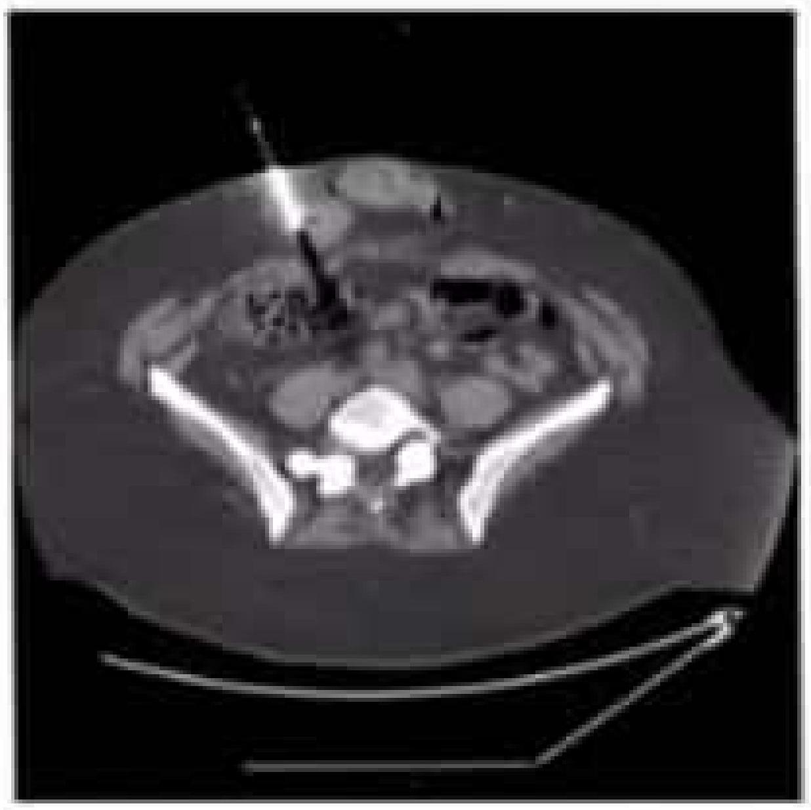
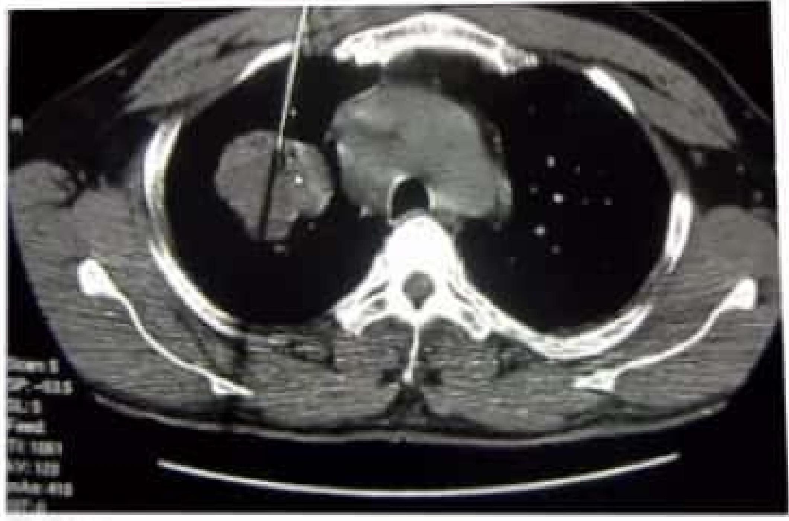
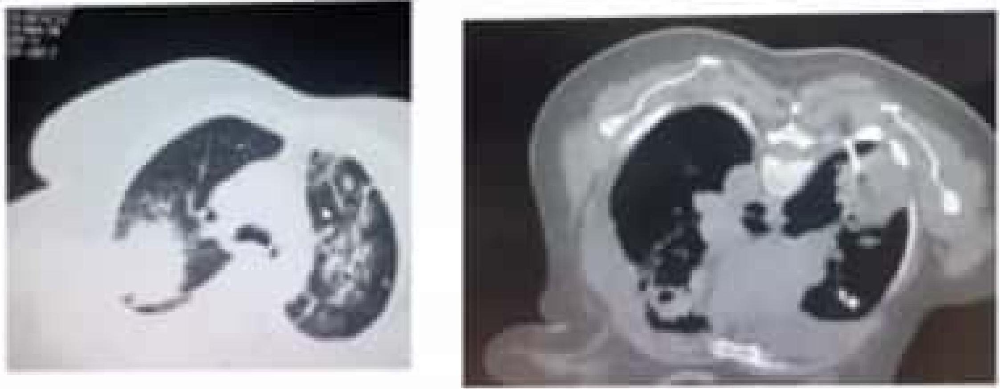
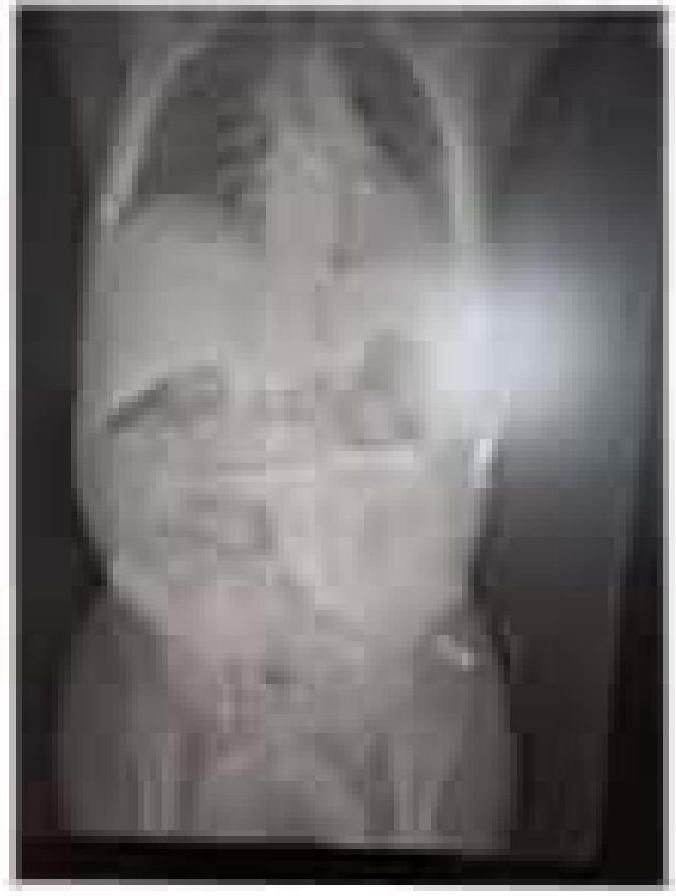
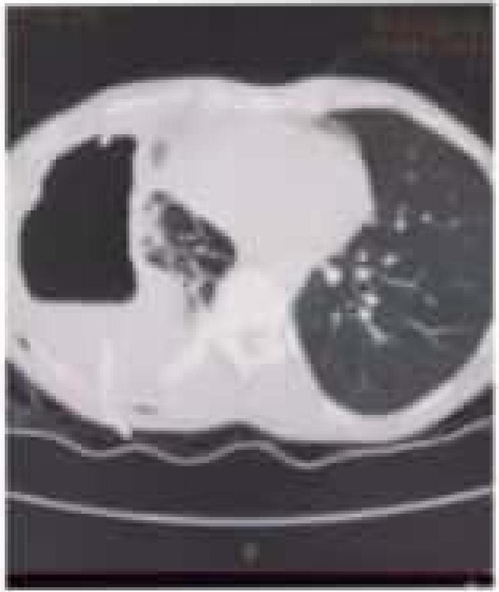
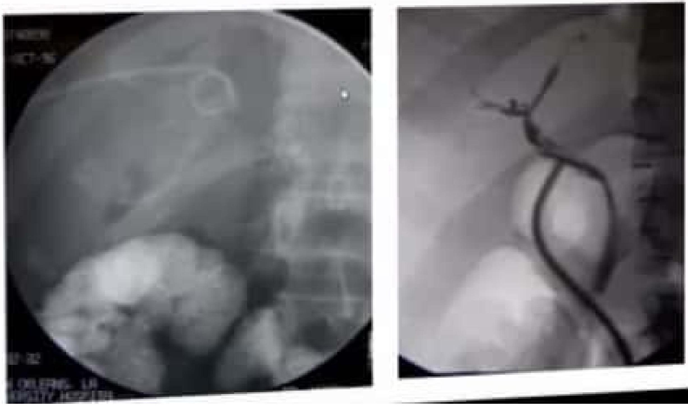
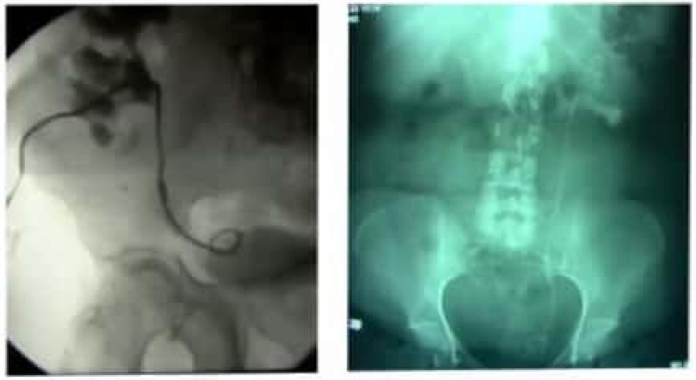
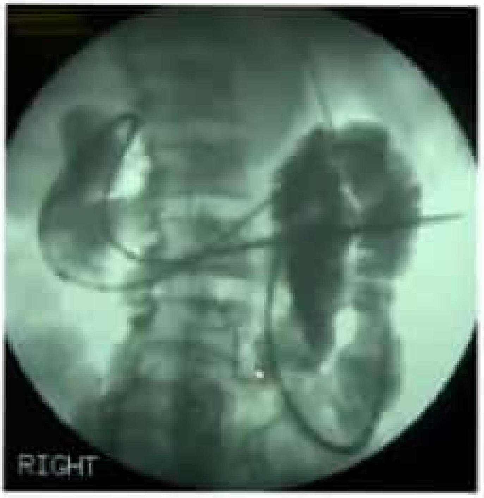
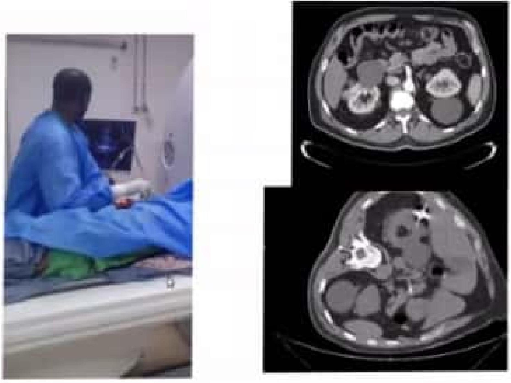

Non Vascular Interventions
P Chacha Magabe, IR, Dept of Radiology-UON/KNH
IR-Introduction
- Minimally invasive diagnostic and treatments
- Image guidance-US,CT,MR,floroscopic
- A variety of devices-needles, drainage catheters
Percutaneous Biopsy

- US, CT or fluoroscopy
- Random sampling or sampling of a mass
- Lung, mediastinum, pleura, chest wall, nodes
- Liver, adrenal gland, pancreas kidneys, lymph nodes
Lung Biopsy
 For early diagnosis
US,CTfloroscopic guldance-for yields and safety
Percutaneous Abscess Drainage
- US, CT or fluoroscopy
- Aspiration or drainage tube placement
- Usually for infection
- Pleura, lung
- Hepatic (intra/sub), pericolic gutters, perisplenic, peri/intrapancreatic, pouch of Douglas, psoas, abdominal wall
Drainages
- Done for fluid colections in solid organs and cavites -pigtail catheters used
Drainage of a Pneumothorax
- acess /entry site is mapped out
- aseptic prep is done
- local anaesthetic
- pigtail catheter inserted
- real time-US,CT
Cholangiography and Biliary Drainage
- Fluoro, US
- Cholangiogram-inject transhepatically into biliary tree and intervene with plastic or metal stents, stone removal, plasty, etc.
- Drains/stents can be internal, internal-external or external
- Interventions tend to be painful so need good anesthesia
- Often useful when Gl cannot delineate lesion retrograde
Internal and External Biliary Stents (L), T Tube Cholangiogram (R)
Biliary Stenting
- types:covered,non covered,plastic
- internal/external biliary drains first
- restenting
Nephrostogram and Nephrostomy Tube and Ureteral Stent Placement
- US and fluoro guidance
- Used to check patency of collecting system and relieve obstructions putting the patient at risk for kidney failure, sepsis
- Tubes need constant monitorir.g after placement
Nephrostomies
- Have indications from obstructive uropathy
- Ca cervix, prostate, calculi

Nephroureteral Stent (L), Double J Stent (R)
Gastrostomy Tubes
- Fluoro guidance facilitating direct percutaneous placement of G tube into the stomach
- Indicated for pts with difficulty swallowing often due to neurological or ENT causes
- G tubes can also be placed by surgery but IR is less invasive
- GI can also place G tubes except when the esophagus is blocked by a mass

Gastrojejunostomy Tube
Radiofrequency Ablation
- CT, US
- Thermal ablation using electrodes advanced into lesion
- Most used in the liver; has been used in lung, kidney, bone
- Probe heats the tissue via rapid alternating current for a set amount of time as per tissue
- Needs Imaging f/u to check tumor response
Tumor Microwave Ablation
Vertebroplasty
- Fluoro guidance
- PMMA injected into vertebral body affected by osteopenia, metastases most frequently for pain relief
- Usually done in the lumbar spine through the pedicles